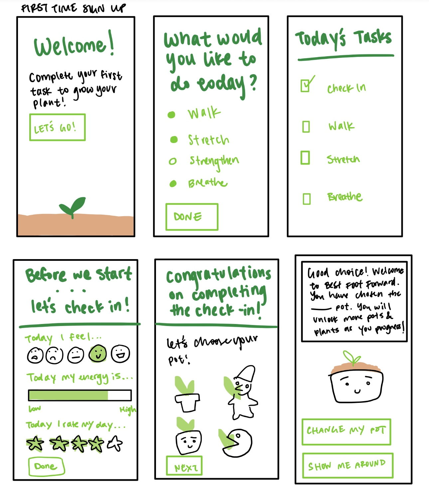

The Seattle's Children Hospital had a system in place to encourage patients in the in-patient cancer care unit to remain active during their stay which involves rewarding a foot sticker for each mile they walked. Patients could display stickers outside their door or on their walls as decoration, however they discovered that this wasn't particularly motivating for patients and sought out an app to better encourage their patients to remain active!
Seattle Children's Hospital Physical Therapist:
With the return of cozy nostalgia lifestyle-based games like Animal Crossing and the increasing popularity of gamifying exercise, I came up with an idea for a motivational gardening style game where exercising & positive health practices grant points to the user. Points go towards more diverse plant type and plant growth options and customizations. Users are rewarded for returning to the app with accelerated plant growth but users' plants will grow weeds and bugs if neglected and not visited consistently.

Through this project I learned a lot about how to properly cater the app towards the patients and to give the user the power to choose and set their own goals. For example the walking portion used to go by distance walked instead of time walking, however each patient is different in energy levels and abilities so this was changed to time and was made modifiable by the user (adding time, decreasing time, pausing, stopping). This was a fun project to work on especially since I have no expertise in regards to physical therapy and I personally also find it difficult to motivate myself to exercise. There were also a lot of interaction architecture problems that I hadn't taken into account (what happens after the user is done with a task? are they able to add tasks and delete tasks? what happens if they only complete a task halfway?). This project honed my attention to detail, problem solving skills and thinking like a user who would be using this app. In addition I reached out to Seattle' P-Patch Community Garden and they expressed their willingness to provide seeds for patients to grow on their own in conjunction with the app to give them something tangible! As of now, COVID-19 has put things on hold, but I am looking forward to working on this more!